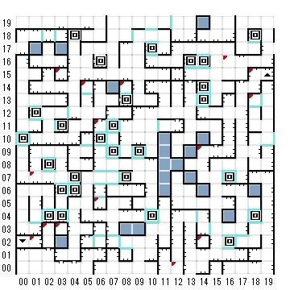

【 x：1，y：7 】
ほこりにまみれた床を慎重に探し、
ついに 君は 古代の岩に刻まれた
ペンタグラムを見つけ出した。
そしてその輪の中に入らないように
気をつけながら、腕を振り上げ、
召喚の呪文を高らかに唱えた！
【 x：1，y：2 】
気をつけろ！この先は”さまよいの迷路”なり
足元に気をつけろ！
【 x：2，y：3 】
階段上ってきたすぐ後だと北に抜けられる？
【 x：3，y：15 】
おりの扉が君の後ろでばたんと閉じた。
どうも永遠へ通じる新しい道を見つけた
みたいだ。
【 x：3，y：3 】
おりの扉が君の後ろでばたんと閉じた。
どうも永遠へ通じる新しい道を見つけた
みたいだ。
【 x：5，y：14 】
君は大きな窯をかき回している
年老いた魔女にであった。
”どうかね？歩き回るのは
楽しいかね？（ヘッヘッヘ）”
”おまえさんみたいな野望を抱いとるもんは、
鷲の有名な”ブルーブラッドスペシャル”が
いるだろうて。もしおまえさんが材料を持って
きたら、一塊つくってやるんじゃがねえ”
さてさて、何を持ってきてるのか見てみようかね
ウサギの毛 は持っとるね。
タンニン酸 は持っとるね。
虫よけ がないねえ。
鉄 がないねえ。
スペインの塗り薬がないねえ。
かき混ぜｌ器 がないねえ。
”おやおや！ まだこれじゃあちょいと
足りないねえ。 材料がそろわないと
助けてあげられないよ。
”また後でな（クチャ）（クチャ）”
【 x：6，y：11 】
おりの扉が君の後ろでばたんと閉じた。
どうも永遠へ通じる新しい道を見つけた
みたいだ。
【 x：6，y：5 】
目の前には、泡立つ水で満たされた
小さな洞穴があり、その周りには
数えきれないほどのカギヅメのあとが
見て取れる。しかし、どこにも生物の
姿はなかった。
これこそロンウォルトゥ未記念プールではないか！
このプールは、輝かしくも、論理的な解決策を見出し、
そこに飛び込んで行ったが、惜しむらくはそれが誤りで
あったプレイテスターにささげられたものである。
飛び込む前に、”ウォルトウの物語”に書き
記された次の文の意味をもう一度よく考えて
みなさい。
”彼は戻ってきたか？戻ってきたかって？
彼の魂はいまださまよっている！”
入ってみるか？
水に入ったとたん、君の魂の中に
淀んでいた邪悪なものが、すべて
洗い清められるような感じがした。
【 x：8，y：14 】
おりの扉が君の後ろでばたんと閉じた。
どうも永遠へ通じる新しい道を見つけた
みたいだ。
【 x：12，y：0 】
ほこりにまみれた床を慎重に探し、
ついに 君は 古代の岩に刻まれた
ペンタグラムを見つけ出した。
そしてその輪の中に入らないように
気をつけながら、腕を振り上げ、
召喚の呪文を高らかに唱えた！
【 x：14，y：9 】
その角には小さなビー玉のような
白い玉が散らばっていた。
ビー玉をとる（Y/N）
君は A WHITE SPHEREを手に入れた
【 x：14，y：2 】
おりの扉が君の後ろでばたんと閉じた。
どうも永遠へ通じる新しい道を見つけた
みたいだ。
【 x：16，y：16 】
ほこりにまみれた床を慎重に探し、
ついに 君は 古代の岩に刻まれた
ペンタグラムを見つけ出した。
そしてその輪の中に入らないように
気をつけながら、腕を振り上げ、
召喚の呪文を高らかに唱えた！
【 x：18，y：15 】
この先 戻り難し
【 x：18，y：13 】
おりの扉が君の後ろでばたんと閉じた。
どうも永遠へ通じる新しい道を見つけた
みたいだ。